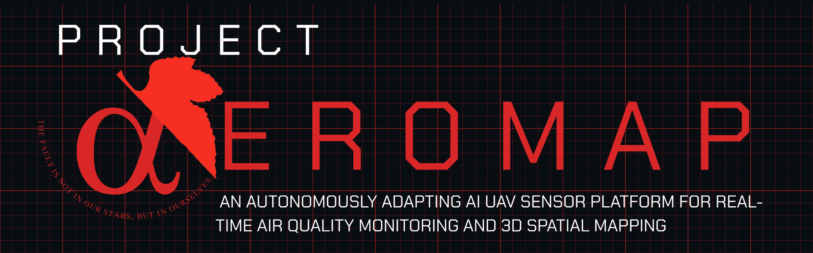
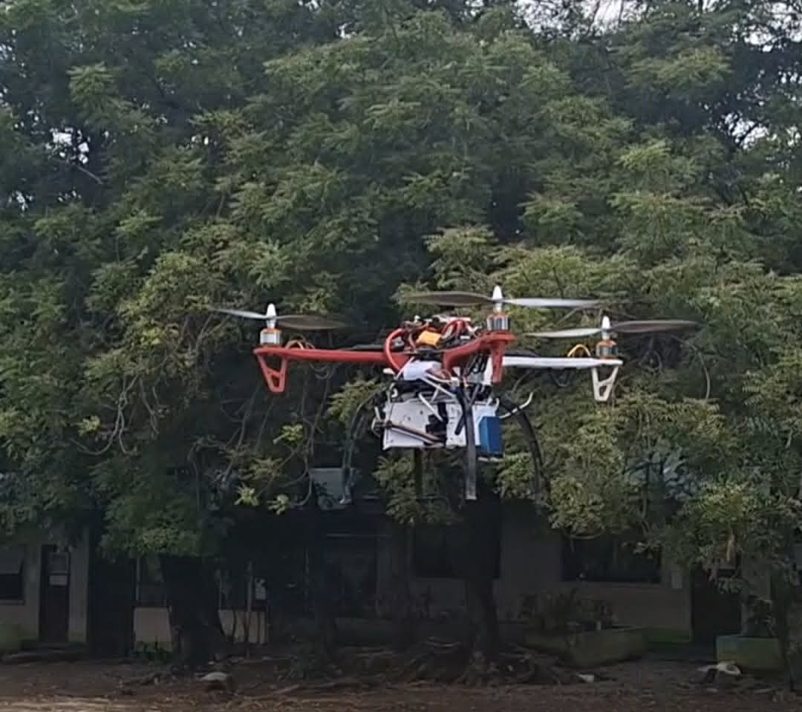
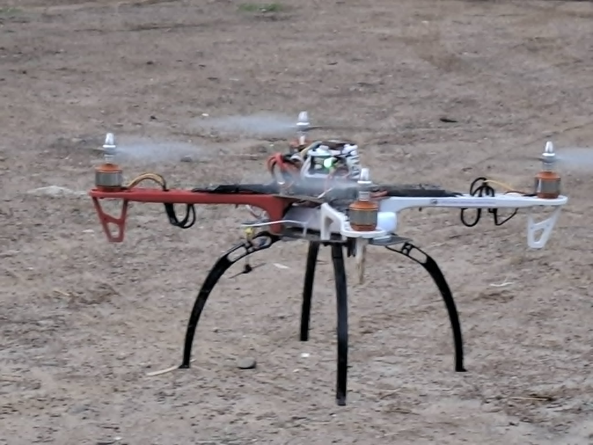
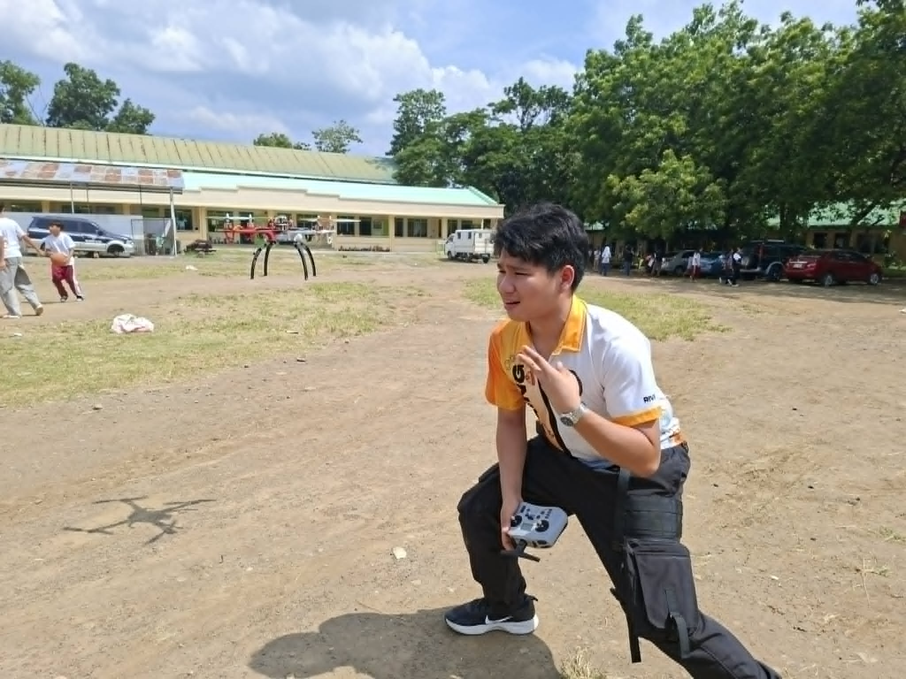
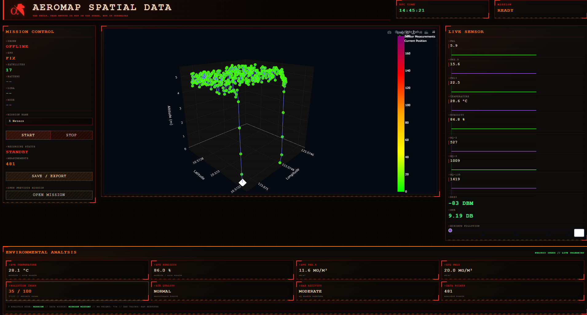

of the population breathes air that exceeds the WHO limit.
AEROMAP / 001
UNMANNED AERIAL SYSTEM
ATMOSPHERIC OBSERVATION
UNMANNED AERIAL SYSTEM
ATMOSPHERIC OBSERVATION
▰ NERV RESEARCH DIVISION / PROJECT FILE 001

AN AUTONOMOUS UAV SENSOR PLATFORM FOR
REAL-TIME AIR QUALITY MONITORING & 3D MAPPING
THE FAULT IS NOT IN OUR STARS, BUT IN OURSELVES.
環境監視 // ATMOSPHERIC MONITORING FIELD RECORD / ACTIVE 01 / 07
CAUTIONENVIRONMENTAL DATA IS A PUBLIC INTEREST観測記録 / OBSERVATION RECORDCAUTION
01 — PROJECT BRIEFING
THE MISSION
PROJECT AEROMAP RESEARCH SUMMARY // DECLASSIFIED
Air pollution does not remain at a single point — and monitoring should not be limited to one.
Project AEROMAP is an autonomous unmanned aerial vehicle (UAV) system developed to collect and visualize air-quality data across multiple altitudes. It integrates environmental sensors, GPS-based autonomous navigation, wireless data transmission, and a software-based monitoring dashboard.
The UAV was tested through autonomous flight missions along programmed paths. Collected environmental measurements were transmitted to a ground station and presented through HELIOS software for real-time visualization and analysis.
“Could we map this?”THE QUESTION THAT INITIATED THE PROJECT
01-A — RESEARCH ABSTRACT
RESEARCH ABSTRACT
PROJECT AEROMAPOFFICIAL RESEARCH ABSTRACT // 001研究資料 / ARCHIVE
Air pollution monitoring is commonly conducted using stationary monitoring stations, which can limit the ability to observe variations in air quality across different locations and altitudes; moreover, these stations are very expensive. This study developed Project AEROMAP, an autonomous unmanned aerial vehicle (UAV) system designed to collect and visualize air quality data across multiple altitudes. The system integrates environmental sensors, GPS-based autonomous navigation, wireless data transmission, and a software-based monitoring dashboard.
The UAV was tested through autonomous flight missions to evaluate its ability to navigate along programmed flight paths and collect environmental data at different altitudes. The collected data were transmitted to the ground station and presented through the developed software for real-time visualization and analysis.
Based on the observations and test results, AEROMAP was able to successfully collect air quality data across multiple altitudes and complete autonomous navigation with minimal human intervention. The developed software was also able to display and organize the collected data in an accessible format. These results demonstrate the feasibility of using an autonomous UAV as a platform for multi-altitude air quality monitoring and three-dimensional spatial data visualization.
END OF ABSTRACTPROJECT FILE / AEROMAP
02 — GLOBAL CONTEXT
THE ATMOSPHERIC THREAT
The AEROMAP research poster identifies air pollution as a major global concern and highlights the lack of localized monitoring data. These figures are reproduced from the supplied project poster as cited context, not measurements generated by AEROMAP.
premature deaths attributed to air pollution, as stated in the project poster.
GAP
Stationary monitoring can be costly and may not describe variation across locations and altitudes.
!WHY IT MATTERS
Localized, multi-altitude observations can help researchers better understand how environmental conditions vary across a monitored area.
03 — DIRECTIVES
MISSION OBJECTIVES
DESIGN & DEVELOP
To design and develop the AEROMAP drone system.
APPLY & FIELD TEST
To apply and field test the AEROMAP drone system.
EVALUATE DATA ACCURACY
To evaluate the accuracy of the collected data from the AEROMAP drone system.
IDENTIFY ABNORMAL READINGS
To determine the effectiveness of the system's ability to identify abnormal readings.
DEFINE TECHNICAL LIMITS
To identify technical limits and areas of improvement for the AEROMAP drone system.
04 — SYSTEM ARCHITECTURE
THE PLATFORM
Aerial mobility. Embedded sensing. Wireless telemetry. Ground-based interpretation.
The system combines a UAV platform with environmental sensors, GPS-based autonomous navigation, wireless data transmission and HELIOS, the software used to receive, display and analyze collected data.
FLIGHT CONTROLSpeedyBee F405 Wing
EMBEDDED PROCESSINGESP32 SENSOR NODES
WIRELESS LINKLoRa / 433 MHz
GROUND SOFTWAREHELIOS / PYTHON

ENVIRONMENTAL SENSOR ARRAY 観測装置 / INSTRUMENTS
Sensor outputs require calibration and appropriate interpretation. MQ-series devices are broad-response sensors; their readings should not be presented as certified gas concentrations without a validated calibration procedure.


05 — FLIGHT TEST & EVALUATION
FIELD RECORDS
of missions completed, as reported in the poster.
variation in most flights, as reported in the poster.
area during testing.
reported during testing.
OBSERVATION SUMMARY FIELD EVALUATION / POSTER
Autonomous navigation demonstrated under controlled conditions.
The poster reports that the system navigated its programmed mission with minimal human supervision and showed approximately 7% variation in most flights, with line of sight maintained with the pilot.
It also reports that HELIOS received, displayed and analyzed the collected data through a user-friendly interface. The study concludes that AEROMAP demonstrated feasibility as an autonomous proof of concept for multi-altitude air-quality monitoring and visualization.
RESULTS ARE REPORTED AS PRESENTED IN THE PROJECT POSTER. REFER TO THE FULL RESEARCH PAPER FOR DEFINITIONS, TEST CONDITIONS AND STATISTICAL DETAILS.

PLATFORM FIGURESTHEORETICAL / NOT FIELD-VALIDATED PERFORMANCE
10 KMTHEORETICAL RANGE
7 KMTHEORETICAL ALTITUDE
90 KM/HTHEORETICAL MAX SPEED
06 — NEXT DEVELOPMENT PHASE
FUTURE DIRECTIVES
LARGER UAV PLATFORM
Increase payload capacity for more capable environmental sensors.
BETTER SENSOR ACCURACY
Use improved sensors and proper calibration to strengthen measurement reliability.
EXTENDED FLIGHT ENDURANCE
Provide additional capacity for batteries and equipment to support longer missions.
SMARTER ANALYSIS
Continue improving data interpretation and abnormal-reading identification.
07 — PERSONNEL / PROJECT ORIGINTHE PERSON
THE PERSON
BEHIND THE MISSION
ANGELO CHLOE R. RIVERS
The idea for AEROMAP began with an unexpected connection between a video game and a problem in the real world. While playing Ace Combat 7, Angelo considered a different premise: what if drones were the good guys?
At the time, his research topic focused on toroidal propellers. During a discussion at the clinic where he served as a DRRM officer, Sir Brian Azarcon advised him to change the topic, a suggestion Sir Peter Teompa also supported. Angelo then recalled the severe smoke and vehicle emissions around his community, located beside a national highway. The question followed naturally: could those conditions be mapped?
Connecting that local concern with the UAV concept from the game led to the research direction that became Project AEROMAP: using drones not as antagonists, but as tools for environmental observation.
COMMUNICATIONS / OPEN CHANNEL
CONTACT PROJECT AEROMAP
For research inquiries, documentation requests or collaboration discussions, contact the project creator.